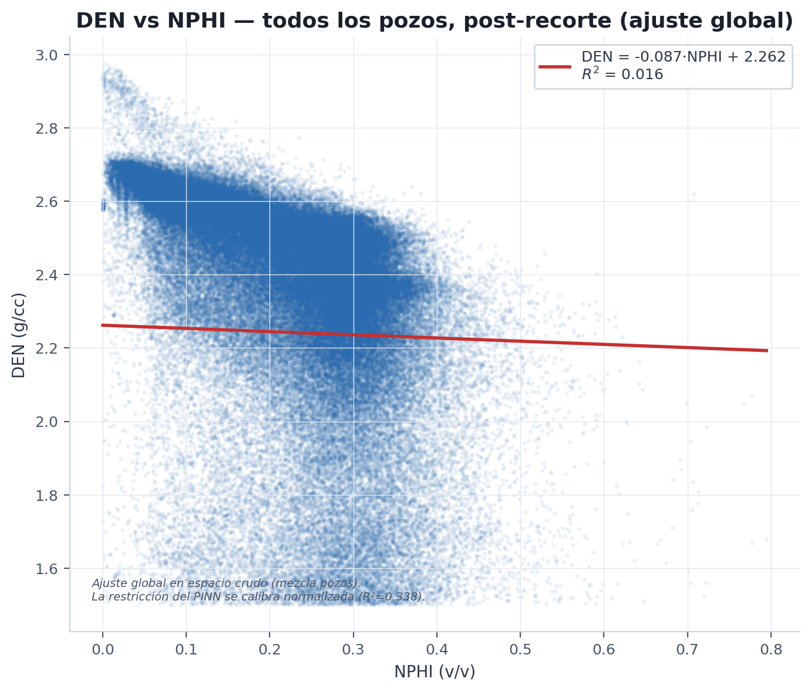
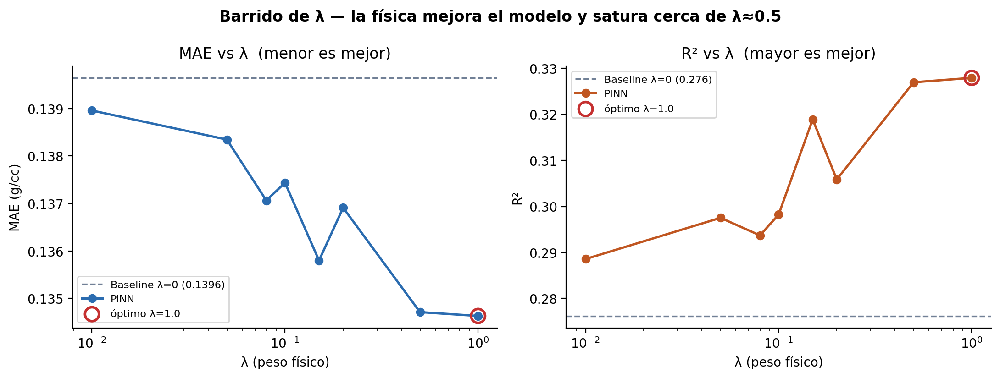
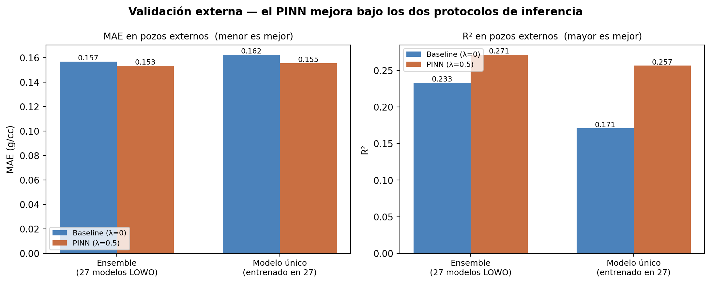
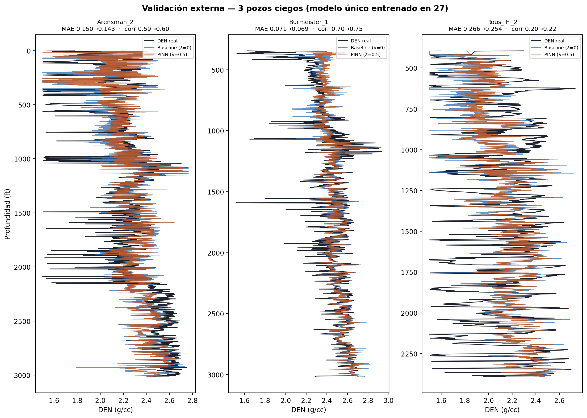
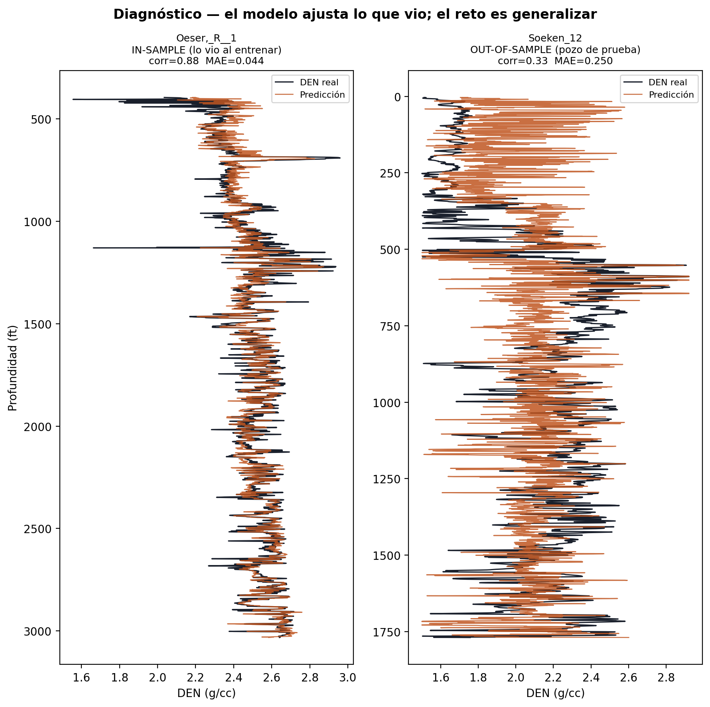

Physics-guided neural network
Machine learning models for well logs have a known weak point: they generalize poorly to wells they did not see during training. This project explores a frontier technique to address that problem —a physics-informed neural network (PINN)— on a concrete case: reconstructing the density curve (RHOB) of a well from the other curves that were actually measured.
The idea is to give the network, in addition to the data, a known physical relationship from the domain —the density–neutron relation— as a guide, and check whether that improves generalization with an honest benchmark: train on some wells and evaluate on others it never saw. This project grew out of reading papers —a recent one reports up to 3× less error on blind wells with this idea— and wanting to reproduce the technique at my scale. Below I walk through it: the problem, what I think causes it, and how I approached it.
View the repository Go to results
The data come from the Kansas Geological Survey, which publishes LAS files from real wells. From there I took the Kraft Prusa field: 30 clean wells and about 154 000 depth records (in feet). Each well carries several curves measured along the wellbore; I use five as inputs —gamma ray (GR), two resistivities (RT, RILM), neutron porosity (NPHI), and spontaneous potential (SP)— to predict density (DEN, or RHOB).
The physical hint is a well-known relationship in petrophysics: density and neutron porosity are correlated —higher porosity means lower density—. It is not an exact law, but it is real, and it is exactly what the model will use as a guide.

Raw logs do not come ready for a model, and each problem has a physical or instrumental cause. Neutron porosity is sometimes in percentage instead of fraction; old tools mark null values with huge numbers (10⁹ Ohm·m) instead of leaving them empty; and where the well collapses —what is called washout— several curves get distorted. The pipeline corrects each issue step by step:
log₁₀ scale —it is log-normal by physics— and sentinel values (>10⁶) are discarded.

The benchmark is the heart of the project. To measure whether the model works on a new well, mixing everything and splitting at random is not enough: measurements from the same well resemble each other, and a random split would leave segments of the test well inside the training set. The result would be inflated: optimistic metrics that say nothing about performance on a truly new well.
I use Leave-One-Well-Out (LOWO): I train on all wells except one and evaluate on the held-out one, rotating through all 27 wells. I also set aside three wells from the start that the model never sees —neither for training nor for tuning anything—: the most honest test I have, with completely blind data.


A PINN modifies the loss —what the network minimizes during training— to include, in addition to the error against the measured data, a second term that penalizes deviating from a known physical relationship. Here that relationship is the density–neutron one: it is robust and does not depend on parameters that need to be calibrated field by field. The weight $\lambda$ controls how much physics enters, and it has a convenient property: with $\lambda=0$ the second term vanishes and I recover exactly the baseline model. That turns the "with" vs "without" physics comparison into a controlled ablation —I change one thing and measure its effect.
Both terms are the same type of error. The first compares the density predicted by the network, $\hat{\rho}$, against the real measurement, $\rho$. The second compares it against the density that physics would expect at that depth, $f_\phi$ (I explain the weight $w_i$ in a moment).
Where does $f_\phi$ come from? I did not invent it: I calibrated it from the data. On the 27 training wells I fitted density against neutron porosity by least squares —a regression—. But a single variable falls short: in shales, where the gamma ray (GR) is high, neutron porosity "lies" —clay has high apparent porosity but intermediate density— and that flattens the relationship. So I added an interaction term, NPHI×GR, that captures that lithology effect:
The coefficients $A=-0.556$ and $D=0.086$ are the result of that regression, in the normalized data space (not in g/cc), and there is no intercept: normalization centers everything at zero, so the line passes through the origin. The interaction term raises the fit from $R^2=0.330$ to $0.338$. It is a weak relationship —it explains just over a third of the variation— and I am fine with that: I do not want the physics to dominate, just to guide.
That leaves the weight $w_i$. The physical relationship is not reliable everywhere: where the well has collapsed (washout) the measured density is doubtful, so forcing the physics there would be correcting the model with bad data. That is why I weight the physical term by the caliper —the wellbore diameter log, measured and available in all 30 wells—: per well, $w_i$ goes from 1 where the hole is in gauge (DCAL at the 25th percentile) to nearly 0 in severe collapse (90th percentile), and clearly collapsed intervals are discarded entirely. That selectivity is what lets me raise $\lambda$ without harming the harder wells.
With everything in place, I swept a range of $\lambda$ values over the 27 wells. The best results are at $\lambda=0.5$: it is the value that helps the most wells —22 of 27— without hurting the others. (λ=1.0 lowers the mean error a little more but improves fewer wells.)

In the LOWO evaluation (27 wells), going from "without physics" to "with physics" lowers the mean error (MAE) from 0.140 to 0.135 g/cc and raises $R^2$ from 0.276 to 0.327, improving 22 of the 27 wells. That is good, but the test I really cared about is the three blind wells: the ones I set aside at the start that the model never saw, neither for training nor for tuning anything.
There is a distinction worth separating here, because it helps see what the model contributes and what the physics contributes. I predicted those three wells in two ways:
I report both on purpose. The absolute level of each row shows how much the model (the data) contributes; the improvement within each approach, from "without" to "with" physics, shows how much the PINN contributes. Since that jump is positive in both, the advantage of the physics is not an artifact of how I combined the predictions:
| Evaluation approach (3 blind wells) | Metric | Without physics (λ=0) | With physics (λ=0.5) |
|---|---|---|---|
| Average of 27 models | MAE | 0.157 | 0.153 |
| Average of 27 models | R² | 0.233 | 0.271 |
| A single model (27 wells) | MAE | 0.162 | 0.155 |
| A single model (27 wells) | R² | 0.171 | 0.257 |


Looking at the absolute numbers —a modest $R^2$ even with physics— an honest question stayed with me: is the model falling short due to lack of capacity, or because getting a new well right is just inherently hard? To separate the two I ran a simple diagnostic: I took the same model and asked it to fit, on one hand, a well it did see during training and, on the other, one it did not.
The contrast is clear: on the known well it nails it (correlation 0.88); on the unknown one it drops. That is, it has plenty of capacity —the architecture is not the bottleneck—; what is hard is generalizing to a new well. And that is exactly the territory where a physical guide helps: it does not give the model more power, it gives it a compass when the data fall short.

It is worth being clear about what this project does not solve —that is part of what is interesting—:
And some seeds, in case other projects grow from here:
If I had to summarize it in a few lines:
This is a learning project, so any comments or improvements are welcome.
The idea of putting physics in the loss function to improve generalization to blind wells came from this paper, which is the one reporting the 0.123 → 0.042 improvement I mention above (they predict mineral volumes and porosity; I adapted the idea to density):
And the data source: